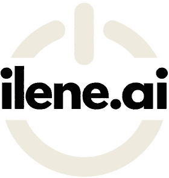

Interactive tool
Decide which AI work comes first.
Most organizations have more AI ideas than capacity to deliver them. Rate each candidate on value, feasibility, data readiness and risk to see which to start now, which need preparation and which to park.
- 1List your candidate use cases
- 2Rate each one from 1 to 5
- 3Take the shortlist into your next leadership meeting
Your use cases
Five examples are loaded to show how it works. Rename them, re-rate them or clear them and start with your own.
Your ranked shortlist
Ordered by quadrant, then by priority score. Each item carries a suggested next step and any gaps to close before committing budget.
Add a use case above to build your shortlist.
Prepared with the ilene.ai AI Use Case Prioritization Tool (ilene.ai/use-case-prioritizer.html). Results reflect the ratings entered and are directional only.
How the ratings work
Five questions for every use case.
Rate each use case against the same criteria so the comparison is fair. Where people disagree on a rating, that disagreement is useful: it usually points to an assumption that needs checking.
Business impact
The effect on cost, revenue, service quality or capacity. 1 is minor or hard to see. 5 is significant and measurable.
Strategic fit
How directly it supports stated organizational priorities. 1 is a nice-to-have. 5 is central to the plan.
Feasibility
Whether it can be built and adopted with the skills, tools, budget and integration path available. 1 is a major stretch. 5 is straightforward.
Data readiness
Whether the data it needs exists, is accessible and is of usable quality. 1 is not available. 5 is ready to use.
Risk
Exposure if it gets things wrong: privacy, regulatory, safety, fairness or reputational. 1 is low. 5 is high and needs strong oversight.
This tool compares the ratings you enter. It is directional, does not assess your organization’s overall AI maturity and is not a substitute for a detailed assessment. Ratings are stored only in this browser.
From shortlist to plan
Turn your shortlist into a sequenced roadmap.
Through AI Transformation, ilene.ai tests these ratings with the people who own the work, closes the data and governance gaps behind each priority, and sequences the work into a plan with owners and measures.